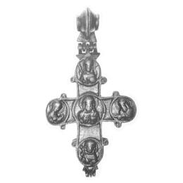
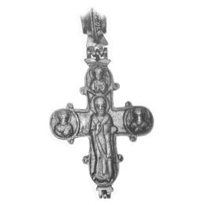

Catalog › CE-0025 · LOV1999-19
Encolpion bivalv kievean cu scena Deisis
a doua jumătate a sec. XII (1151–1200) · Dunaszentmiklós, Komárom (Kom.), Ungaria · Muzeul Național Maghiar, Budapesta, inv. 1870.25.4
double-sided reliquary cross (enkolpion), bronz; a doua jumătate a c. XII (1151–1200); found at Dunaszentmiklós, Komárom (Kom.), Ungaria; kept at Muzeul Național Maghiar, Budapesta.




Identificare
- Categorie
- Encolpion bivalv (relicvar)
- Material
- Bronz
- Tehnică
- Turnare în relief
- Dimensiuni
- Î 110 × L 77 mm
Iconografie
- Avers
- Hristos Pantocrator; Sf. Arhanghel Mihail; Sf. Ioan
- Descriere avers
- În mijloc, într-un medalion cu chenar perlat, bustul lui Hristos, cu o carte în stânga și dreapta ridicată în semn de binecuvântare; la capetele brațelor, în medalioane, busturile arhanghelilor Mihail (sus) și Gavriil (jos) și, de o parte și de alta, Maria și Ioan Botezătorul, în rugăciune. Scena este un Deisis, nu o Răstignire.
- Revers
- Sf. Nicolae; Sf. Gheorghe
- Descriere revers
- Sf. Nicolae în picioare, cu dreapta ridicată și o carte în stânga; pe brațul de sus, într-un medalion perlat, Sf. Gheorghe, iar pe laturi Vasili și Prokop.
- Limba
- Slavonă
Datare și atribuire
- Datare
- a doua jumătate a sec. XII (1151–1200)
- Centru
- Rusia Kieveană
Descoperire
- Localitate
- Dunaszentmiklós
- Regiune
- Komárom (Kom.)
- Țară
- Ungaria
- Context
- Tezaur
- Coordonate
- 47.7044° N, 18.3813° E
- Precizia locului
- Doar localitatea
Păstrare și referințe
- Colecție
- Muzeul Național Maghiar, Budapesta
- Nr. inventar
- 1870.25.4
- Bibliografie
- Zs. Lovag, Mittelalterliche Bronzegegenstände des Ungarischen Nationalmuseums (Catalogi Musei Nationalis Hungarici, Series Archaeologica III), Budapest, 1999, p. 26, cat. nr. 19, reprodusă la Abb. 19 a-b (planșele, p. 133). Bibliografie citată în sursă: Ebenhöch 1871, 113; Lovag 1971, 162, Fig. 7/2; Lovag 1994, II-6.
- Figura
- Abb. 19 a-b
- Planșe
- Lovag 1999, planșele, p. 133
- Observații
- Datare după Lovag: a doua jumătate a sec. XII. XII. Cele două jumătăți sunt unite prin balamale între ele și cu inelul de agățare, mare, rifluit. H 11 cm (14 cm cu inelul). Găsit în pământ împreună cu crucea cat. 18, un picior de cruce și două cruci de procesiune. Numele sunt gravate cu litere chirilice pe brațe, între medalioane. Coordonate: ale localității (aproximative), nu date în sursă.
Citare: Corpus Encolpiorum, CE-0025, Encolpion bivalv kievean cu scena Deisis, https://vitaliejosanu1979-ux.github.io/primul-meu-proiect/piese/LOV1999-19/ (accesat 2026-10-17).